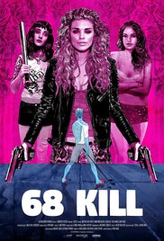
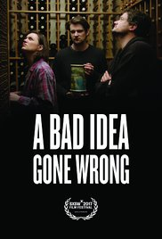
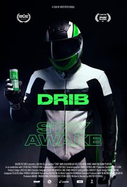
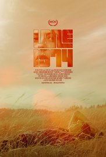
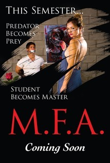
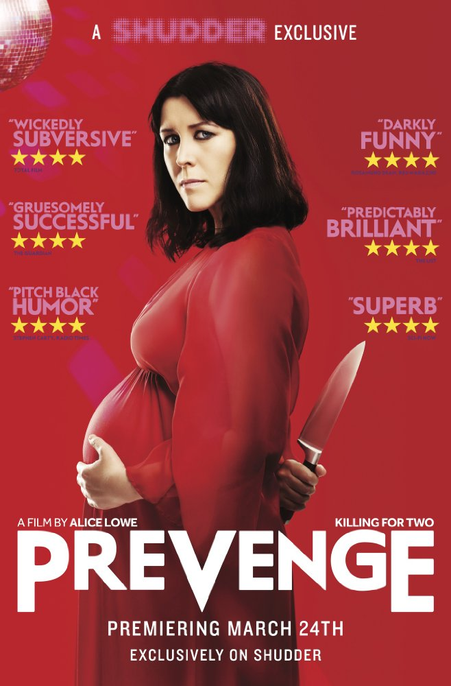
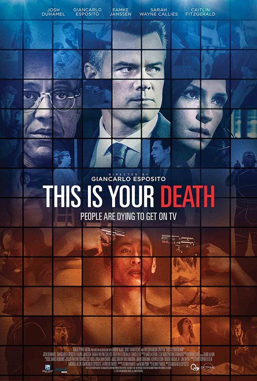

68 Kill (2017)
Directed by Trent Haaga
A punk-rock after hours about femininity, masculinity and the theft of $68,000.
Read more about this movie on
IMDB

A Bad Idea Gone Wrong (2017)
Directed by Jason Headley
Two would-be thieves forge a surprising relationship with with an unexpected housesitter when they accidentally trap themselves in a house they just broke into.
Read more about this movie on
IMDB

A Critically Endangered Species (2017)
Directed by Zachary Cotler, Magdalena Zyzak
This is the story of Maya Dardel, a famous poet and novelist who decides to commit suicide and announces the fact on national radio.
Read more about this movie on
IMDB

California Dreams (2017)
Directed by Mike Ott
A journey into the hallucination of cinema.
Read more about this movie on
IMDB

Colossal (2016)
Directed by Nacho Vigalondo
Gloria is an out-of-work party girl forced to leave her life in New York City, and move back home. When reports surface that a giant creature is destroying Seoul, she gradually comes to the realization that she is somehow connected to this phenomenon.
Read more about this movie on
IMDB

Dara Ju (2017)
Directed by Anthony Onah
A young Nigerian-American financier struggles with love, family, and a prescription drug dependency as his ambitions steer him down a criminal path.
Read more about this movie on
IMDB

Drib (2017)
Directed by Kristoffer Borgli
The inside story of an energy drink marketing ploy gone wrong.
Read more about this movie on
IMDB

Hot Summer Nights (2017)
Directed by Elijah Bynum
A boy comes of age during a summer he spends in Cape Cod.
Read more about this movie on
IMDB
Hounds of Love (2016)
Directed by Ben Young
A cold-blooded predatory couple while cruising the streets in search of their next victim, will stumble upon a 17-year-old high school girl, who will be sedated, abducted and chained in the strangers' guest room.
Read more about this movie on
IMDB

Lane 1974 (2017)
Directed by S.J. Chiro
Based on a true story, Lane is a 13-year-old girl coming of age on a Northern California commune in the 1970s. While Lane enjoys the freedom of living off-the-grid with her mother and younger siblings, she craves a stable ""normal"" life - a life she's only seen in pictures from a stolen Sears catalog. Lane must navigate her troubled mother, Hallelujah, while trying to care for her younger brother and sister. After a series of dangerous and isolating events, Lane decides to forge her own path in hopes of finding a better life after it becomes clear her family has fallen apart.
Read more about this movie on
IMDB

M.F.A. (2017)
Directed by Natalia Leite
An art student taps into a rich source of creative inspiration after the accidental slaughter of her rapist. An unlikely vigilante emerges, set out to avenge college girls whose attackers walked free- all the while fueling a vivid thesis exhibition.
Read more about this movie on
IMDB
Madre (2016)
Directed by Aaron Burns
Diana Prieto is pregnant and taking care of her autistic son Martin has become overwhelming. She has no one to help her while her husband Tomas spends months working in Asia. Diana's at her breaking point with Martin when Luz, a gifted caregiver from the Philippines, steps in to help. Martin quickly begins improving under Luz's supervision, but Diana's worried that he's only being taught to speak Filipino. Diana begins to suspect that Luz is using the language barrier and voodoo to turn Martin against Diana and into something far more sinister...
Read more about this movie on
IMDB

Mr. Roosevelt (2017)
Directed by Noël Wells
After a loved one falls ill, struggling comedian Emily Martin returns to her college town of Austin, Texas and must come to terms with her past while staying with her ex-boyfriend and his new girlfriend.
Read more about this movie on
IMDB

Nobody Speak: Trials of the Free Press (2017)
Directed by Brian Knappenberger
The trial between Hulk Hogan and Gawker Media pitted privacy rights against freedom of the press, and raised important questions about how big money can silence media. This film is an examination of the perils and duties of the free press in an age of inequality.
Read more about this movie on
IMDB

Prevenge (2016)
Directed by Alice Lowe
Widow Ruth is seven months pregnant when, believing herself to be guided by her unborn baby, she embarks on a homicidal rampage, dispatching anyone who stands in her way.
Read more about this movie on
IMDB
The Archer (2017)
Directed by Valerie Weiss
Lauren Pierce has just become the high-school Tri-State Archery Champion. After the competition, Lauren and her teammate Emily return to their hotel room for a night of irresponsible celebratory drinking that grows into more. When interrupted by Emily's abusive boyfriend, Lauren snaps and brutally beats Daniel. Lauren is then sentenced to a girls' reform camp Paradise Ridge, nestled in the mountains of California. But this ""reform camp"" turns out to be a corrupt and twisted prison that breaks young girls and keeps parents in the dark .With the help of Rebecca, a strong and provocative young woman whom Lauren befriends, the two escape the unsafe facility and fight for their lives out in the Utah wilderness; a journey of growth, acceptance and resilience of what they believe is right.
Read more about this movie on
IMDB

The Big Sick (2017)
Directed by Michael Showalter
A couple deals with their cultural differences as their relationship grows.
Read more about this movie on
IMDB

The Most Hated Woman in America (2017)
Directed by Tommy O'Haver
The life of Madelyn Murray O'Hair, the outspoken activist and founder of American Atheists.
Read more about this movie on
IMDB

This Is Your Death (2017)
Directed by Giancarlo Esposito
An unsettling look at reality T.V. where a disturbing hit game show has its contestants ending their lives for the public's enjoyment.
Read more about this movie on
IMDB

Unrest (2017)
Directed by Jennifer Brea
When Harvard Ph.D. student Jennifer Brea is struck down by a fever that leaves her bedridden, she sets out on a virtual journey to document her story as she fights a disease that medicine forgot.
Read more about this movie on
IMDB